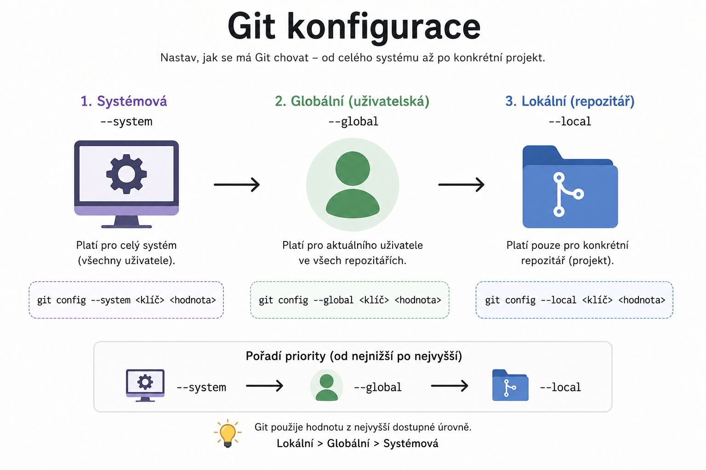

Git – Uživatelská konfigurace
Praktické rady pro globální nastavení Gitu, dlouhé cesty na Windows a konfiguraci vizuálních nástrojů.

Povolení dlouhých cest ve Windows
git config --system core.longpaths true
povolí v Git podporu dlouhých cest na Windows, což často řeší chybu „Filename too long“.
Pozor:
Tento příkaz se musí spustit s administrátorskými právy, protože mění systémovou konfiguraci Gitu.
Musí mít ve Windows povolenou podporu dlouhých cest. (Pokud to není povolené, Git to nezvládne.)
Pokud ještě nemáte povolené dlouhé cesty v systému, lze to udělat takto:
- Spusť
regedit - Najdi klíč:
HKEY_LOCAL_MACHINE\SYSTEM\CurrentControlSet\Control\FileSystem - Najdi nebo vytvoř DWORD hodnotu
LongPathsEnableda nastav ji na1. - Restartuj počítač.
Nastavení Meld jako diff/merge tool
Meld je vizuální nástroj pro porovnávání a slučování souborů.
Umožňuje přehledné zobrazení rozdílů a snadné řešení konfliktů.
Windows – Kompletní postup
Nainstalujte Meld Stáhnout Meld pro Windows
Nastavte Git pro použití Meld:
git config --global diff.tool meld git config --global difftool.meld.path "C:\Program Files\Meld\Meld.exe" git config --global difftool.prompt false git config --global merge.tool meld git config --global mergetool.meld.path "C:\Program Files\Meld\Meld.exe" git config --global mergetool.prompt false
Note
Cestu k Meld.exe upravte podle umístění instalace.
Linux – Kompletní postup
Nainstalujte Meld
sudo apt install meldNastavte Git pro použití Meld:
git config --global diff.tool meld git config --global difftool.meld.path "/usr/bin/meld" git config --global difftool.prompt false git config --global merge.tool meld git config --global mergetool.meld.path "/usr/bin/meld" git config --global mergetool.prompt false
Použití v praxi
Porovnání změn
- Spusťte porovnání souborů:
git difftool
Řešení konfliktů při slučování
- Spusťte nástroj pro slučování:
git mergetool